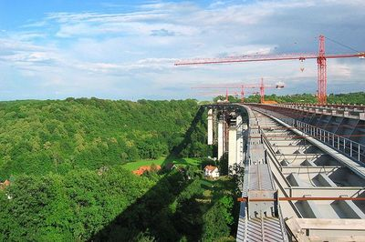
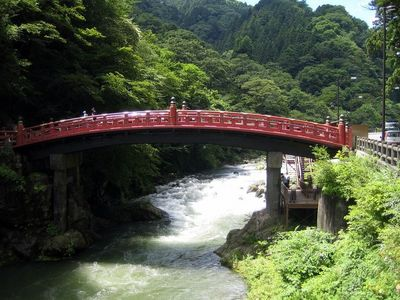
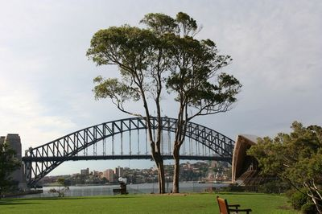
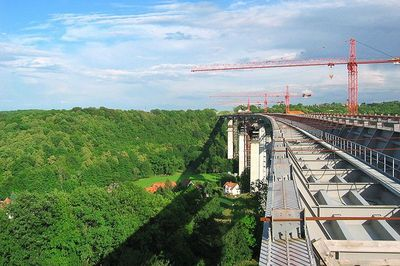
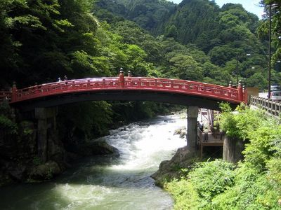
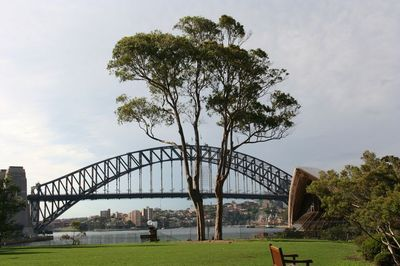

Додати до закладок (Ctrl+D)
Зробити стартовою
Навігація
- Головна
- Конструкція
- Iсторiя
- Будівництво мостів
- Класифікація
- Архітектура мостів
- Найвiдомiшi
- Катастрофи
- Фотогалерея
- Про сайт
Партнери
Найкращi фото мостiв Свiту





|
Додати до закладок (Ctrl+D) Зробити стартовою |
|||
Навігація
Партнери |
Найкращi фото мостiв Свiту   |
||